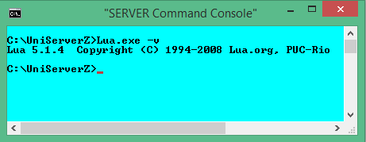

|
|
Lua CLI |
Lua scripts are executed in one of two ways; through a web sever where the output is sent to a browser, or through the command-line interface. Main difference between the two methods is the format of new lines. Output to a browser requires the HTML line break <br /> while the output to a command-window requires \n. This page provides a basic introduction to Lua CLI (command line interface).
Overview
Note: It is assumed you have installed a Lua module for example ZeroXI_lua_1_0_1.exe
Uniform Server is portable, it does not make changes to your PC. As a consequence the standard command prompt (console window) cannot be used to run Lua CLI code. The path to Lua.exe along with other environment variables are undefined. To run Lua CLI code on Uniform Server use the Server Console.
The Server Console button opens a command window (command prompt) with environment variables preset and paths configured for Uniform Server utilities including the Lua interpreter. Apart from cosmetics, it is identical to a standard command prompt.
Lua code is run from the command prompt either directly or interactively by typing lines of code. Alternatively code is run indirectly using code saved in a script file.
Command-window
Running scripts via a command-line is performed using the CLI interpreter Lua.exe this program is located in folder C:\UniServerZ\core\apache2\bin note UniController automatically tracks the installation and changes this path accordingly. In addition UniController sets several environment variables that are required for portability.
Check functionality:
Type the following into the command-window and press enter: Lua.exe -v Displays Lua version number, see image on right for example. Note 1: You can clear the command-window by typing CLS |
 |
Lua Command-line - run code directely
The above demonstrates running Lua code directly using the CLI interpreter Lua.exe the following example prints hello world:
Lua.exe -e "print \"hello world\n\""
The interpreter program takes a number of parameters who’s function is:
Lua.exe | CLI interpreter program Lua.exe If a file extension is not provided Windows will assume .exe hence you can use just Lua |
-e | Parameter -e informs Lua, not to expect a file, next thing on the command-line is actual Lua code |
"print \"hello world\n\"" | Lua code to run. Note: Windows requires the code to be enclosed within quotes. |
Note: If your code contains quotes to avoid problems these must be escaped using a backslash for example:
Lua.exe -e "print \"hello world\n\""
Code examples
The following provide examples that you can cut and past into the command-window:
|
Cut and paste:
Lua -e "print 'Hello World!'"
Lua.exe -e "print \"hello world\n\""
Lua -e "x = 1 y = 4 print(x+y)"
Lua -e "print(os.getenv('windir'))"
|
Comments: Basic print Escape quotes Example calulation Get environment variable |
Lua Command-line - run code interactively
You can run the Lua interpreter in interactive mode by typing lua without any arguments. This displays a Lua prompt.
Each command you type at the Lua prompt for example print "Hello World" is executed immediately after you press enter.
To exit interactive mode and the interpreter use either of the following:
- Type ctrl-z (At the same time press ctrl and z keys) then press enter.
- Or call the exit library function, by typing os.exit() then press enter.
Code examples
The following provide interactive session examples.
1) A basic interactive session:
|
Run Interactive session is shown on the right.
|
Session C:\UniServerZ>lua Lua 5.1.4 Copyright (C) 1994-2008 Lua.org, PUC-Rio > x=2 > y=10 > print(x+y) 12 > print(x*y) 20 > os.exit() C:\UniServerZ> |
2) A basic interactive session and dofile function:
Generally interactive sessions are used for testing code in particular your own functions. These can be placed in a file and run with the dofile function, which immediately executes a file.
|
Create function file Create a new file mylib.lua with content shown on right. Save this file in folder UniServerZ |
mylib.lua function sum (x, y) return x+y end function sumsqr (x, y) local result = x^2 + y^2 return result end |
|
Run Interactive session is shown on the right.
|
Session
C:\UniServerZ>lua
Lua 5.1.4 Copyright (C) 1994-2008 Lua.org, PUC-Rio
> dofile("mylib.lua")
> print(sum(2,3))
5
>> print(sumsqr(2,3))
13
> os.exit()
C:\UniServerZ>
|
Lua Command-line - run scripts
Entering code directly is suitable for a small number of transient commands. For a large number of commands it is preferable to create a script. Advantages of a script file it is easily run and the code is reusable.
Command line format: lua.exe [options] [script_name[args]]
- lua - Lua interpreter .exe is optional
- options
- script_name - Name of Lua script for example test1.lua
- args - The args are optional. If given are available to script as strings in a global table named arg.
Note: The arg table contains both positive and negative indices. Indices 0 to arg.n contain the script_name and args respectively. Negative indices include name of the interpreter and any options.
The following examples show how to run Lua scripts
1) Run basic Lua script:
|
Create script: Create a test script shown on the right and save to |
test1.lua
print("hello world\n")
|
|
|
Run script: Run the script by typing the following into a command-window: lua test1.pl |
Result1 C:\UniServerZ>lua test1.pl hello world C:\UniServerZ> |
2) Pass arguments to script:
|
Create script: Create a test script shown on the right and save to |
test2.lua print(arg[-2]) print(arg[-1]) print(arg[0]) print(arg[1]) print(arg[2]) print(arg[3]) |
|
|
Run script: Run the script by typing the following into a command-window: lua test2.lua aaa bbb bbb
|
Result2 C:\UniServerZ>lua test2.pl aaa bbb cccc nil lua test2.lua aaa bbb ccc C:\UniServerZ> |